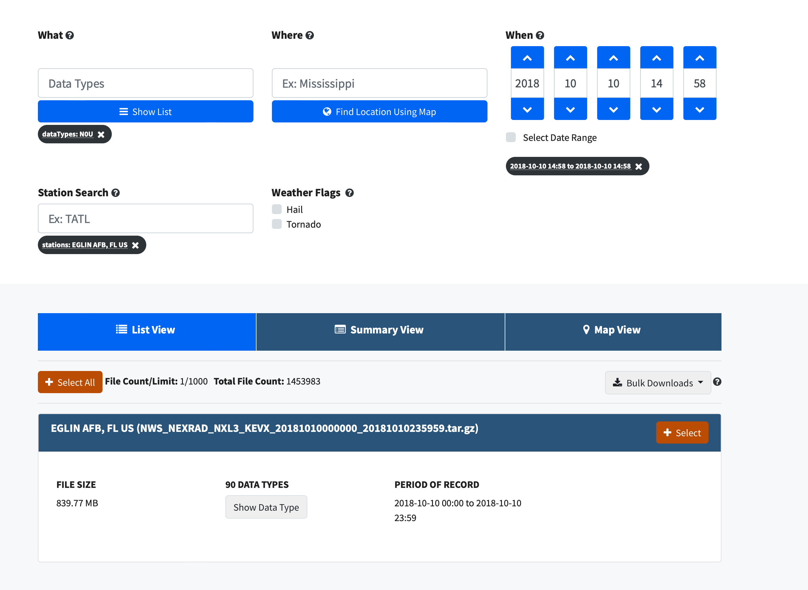

Fixing Weird Patterns When Plotting NEXRAD Level 3 Data#
The motivation here comes from a thread on Twitter, indicating an issue when plotting NEXRAD Level 3 radial velocity (NOU).
Here is the radar image, plotted by David (@dryglick):

Notice the odd pattern directly north/south and east/west of the radar…
There appears to be a crosshair of grey/darker pixels in our image.
This was identified as a Moiré Pattern, by Ryan May (@dopplershift), lead developer of MetPy, an open source python library for working with meteorological data.
The Data#
We are using NEXRAD Level 3 Data, which is ground-based radar data in the United States, defined as:
“NEXRAD Level 3 products are used to remotely detect atmospheric features, such as precipitation, precipitation-type, storms, turbulence and wind, for operational forecasting and data research analysis.”
This dataset is provided by the National Oceanic and Atmospheric Administration (NOAA).
Data Access#
We can access this dataset using the NCEI NEXRAD Level 3 Search Portal. We could access data from Amazon Web Services (AWS) if we were interested in data after 2020, but since we are looking at at data from 2018, we need to use the NCEI archive.
David mentioned he was looking at velocity data (N0U) from Elgin Air Force Base in the Panhandle of Florida, with the station identifier of KEVX, at 1458 UTC on October 10, 2018, which was hours before Hurricane Michael made landfall along the Gulf Coast.
We can enter the:
Radar data field (
N0U)Location (
KEVX)Date/time (
10/10/2018 at 1458 UTC)
into our query. Here is what it should lookl like on the webpage:
{kind=link}
Once we add this to our cart, and wait for the data to be sent to our email, we download via HTTP (through a website) or FTP.
We can now unzip the compressed file, then take a look at our data file, reading in the N0U (velocity) field.
The specific file we are interested in is:
KMOB_SDUS54_N0UEVX_201810101458
Recreate the Issue Using PyART#
Imports#
import cartopy.crs as ccrs
import cartopy.feature as cfeature
import matplotlib.colors as mcolors
import pyart
import numpy as np
import matplotlib.pyplot as plt
import warnings
warnings.filterwarnings("ignore")
## You are using the Python ARM Radar Toolkit (Py-ART), an open source
## library for working with weather radar data. Py-ART is partly
## supported by the U.S. Department of Energy as part of the Atmospheric
## Radiation Measurement (ARM) Climate Research Facility, an Office of
## Science user facility.
##
## If you use this software to prepare a publication, please cite:
##
## JJ Helmus and SM Collis, JORS 2016, doi: 10.5334/jors.119
Read the data using PyART#
When reading into PyART, we can use the pyart.io.read_level3 module, or, we can use the pyart.io.read module which automatically detects the filetype being read in.
radar = pyart.io.read('KMOB_SDUS54_N0UEVX_201810101458')
Plot our Data Using RadarMapDisplay#
Setting our Matplotlib style#
Before we dig into plotting, let’s set our background to dark since that is what the original image showed and it will be easier to identify the pattern in the data.
plt.style.use('dark_background')
Plot our data without setting alpha#
Since we want geographical boundaries on our map, let’s use RadarMapDisplay with our Radar object to create the map.
When we create our plot, everything looks okay - we don’t see the odd Moiré Pattern…
fig = plt.figure(figsize=(10,7))
display = pyart.graph.RadarMapDisplay(radar)
display.plot_ppi_map('velocity',
sweep=0,
vmin=-100,
vmax=100,
projection=ccrs.PlateCarree(),
colorbar_label='radial velocity (m/s)',
cmap='pyart_balance')
plt.xlim(-88, -83)
plt.ylim(28, 33)
plt.show()
Add in the alpha argument#
When we add in the alpha=0.8 argument, which adjusts the transparency of our field, we start to see the pattern.
fig = plt.figure(figsize=(10,7))
display = pyart.graph.RadarMapDisplay(radar)
display.plot_ppi_map('velocity',
alpha=.8,
sweep=0,
vmin=-100,
vmax=100,
projection=ccrs.PlateCarree(),
colorbar_label='radial velocity (m/s)',
cmap='pyart_balance')
plt.xlim(-88, -83)
plt.ylim(28, 33)
plt.show()
Dig into the Issue#
Investigate plot_ppi_map#
Let’s take a look at the specific plotting call being made with plot_ppi_map using ??:
display.plot_ppi_map??
Signature:
display.plot_ppi_map(
field,
sweep=0,
mask_tuple=None,
vmin=None,
vmax=None,
cmap=None,
norm=None,
mask_outside=False,
title=None,
title_flag=True,
colorbar_flag=True,
colorbar_label=None,
ax=None,
fig=None,
lat_lines=None,
lon_lines=None,
projection=None,
min_lon=None,
max_lon=None,
min_lat=None,
max_lat=None,
width=None,
height=None,
lon_0=None,
lat_0=None,
resolution='110m',
shapefile=None,
shapefile_kwargs=None,
edges=True,
gatefilter=None,
filter_transitions=True,
embelish=True,
raster=False,
ticks=None,
ticklabs=None,
alpha=None,
)
Source:
def plot_ppi_map(
self, field, sweep=0, mask_tuple=None,
vmin=None, vmax=None, cmap=None, norm=None, mask_outside=False,
title=None, title_flag=True,
colorbar_flag=True, colorbar_label=None, ax=None, fig=None,
lat_lines=None, lon_lines=None, projection=None,
min_lon=None, max_lon=None, min_lat=None, max_lat=None,
width=None, height=None, lon_0=None, lat_0=None,
resolution='110m', shapefile=None, shapefile_kwargs=None,
edges=True, gatefilter=None,
filter_transitions=True, embelish=True, raster=False,
ticks=None, ticklabs=None, alpha=None):
"""
Plot a PPI volume sweep onto a geographic map.
Parameters
----------
field : str
Field to plot.
sweep : int, optional
Sweep number to plot.
Other Parameters
----------------
mask_tuple : (str, float)
Tuple containing the field name and value below which to mask
field prior to plotting, for example to mask all data where
NCP < 0.5 set mask_tuple to ['NCP', 0.5]. None performs no masking.
vmin : float
Luminance minimum value, None for default value.
Parameter is ignored is norm is not None.
vmax : float
Luminance maximum value, None for default value.
Parameter is ignored is norm is not None.
norm : Normalize or None, optional
matplotlib Normalize instance used to scale luminance data. If not
None the vmax and vmin parameters are ignored. If None, vmin and
vmax are used for luminance scaling.
cmap : str or None
Matplotlib colormap name. None will use the default colormap for
the field being plotted as specified by the Py-ART configuration.
mask_outside : bool
True to mask data outside of vmin, vmax. False performs no
masking.
title : str
Title to label plot with, None to use default title generated from
the field and tilt parameters. Parameter is ignored if title_flag
is False.
title_flag : bool
True to add a title to the plot, False does not add a title.
colorbar_flag : bool
True to add a colorbar with label to the axis. False leaves off
the colorbar.
ticks : array
Colorbar custom tick label locations.
ticklabs : array
Colorbar custom tick labels.
colorbar_label : str
Colorbar label, None will use a default label generated from the
field information.
ax : Cartopy GeoAxes instance
If None, create GeoAxes instance using other keyword info.
If provided, ax must have a Cartopy crs projection and projection
kwarg below is ignored.
fig : Figure
Figure to add the colorbar to. None will use the current figure.
lat_lines, lon_lines : array or None
Locations at which to draw latitude and longitude lines.
None will use default values which are resonable for maps of
North America.
projection : cartopy.crs class
Map projection supported by cartopy. Used for all subsequent calls
to the GeoAxes object generated. Defaults to LambertConformal
centered on radar.
min_lat, max_lat, min_lon, max_lon : float
Latitude and longitude ranges for the map projection region in
degrees.
width, height : float
Width and height of map domain in meters.
Only this set of parameters or the previous set of parameters
(min_lat, max_lat, min_lon, max_lon) should be specified.
If neither set is specified then the map domain will be determined
from the extend of the radar gate locations.
shapefile : str
Filename for a shapefile to add to map.
shapefile_kwargs : dict
Key word arguments used to format shapefile. Projection defaults
to lat lon (cartopy.crs.PlateCarree())
resolution : '10m', '50m', '110m'.
Resolution of NaturalEarthFeatures to use. See Cartopy
documentation for details.
gatefilter : GateFilter
GateFilter instance. None will result in no gatefilter mask being
applied to data.
filter_transitions : bool
True to remove rays where the antenna was in transition between
sweeps from the plot. False will include these rays in the plot.
No rays are filtered when the antenna_transition attribute of the
underlying radar is not present.
edges : bool
True will interpolate and extrapolate the gate edges from the
range, azimuth and elevations in the radar, treating these
as specifying the center of each gate. False treats these
coordinates themselved as the gate edges, resulting in a plot
in which the last gate in each ray and the entire last ray are not
not plotted.
embelish: bool
True by default. Set to False to supress drawing of coastlines
etc.. Use for speedup when specifying shapefiles.
Note that lat lon labels only work with certain projections.
raster : bool
False by default. Set to true to render the display as a raster
rather than a vector in call to pcolormesh. Saves time in plotting
high resolution data over large areas. Be sure to set the dpi
of the plot for your application if you save it as a vector format
(i.e., pdf, eps, svg).
alpha : float or None
Set the alpha tranparency of the radar plot. Useful for
overplotting radar over other datasets.
"""
# parse parameters
vmin, vmax = parse_vmin_vmax(self._radar, field, vmin, vmax)
cmap = parse_cmap(cmap, field)
if lat_lines is None:
lat_lines = np.arange(30, 46, 1)
if lon_lines is None:
lon_lines = np.arange(-110, -75, 1)
lat_0 = self.loc[0]
lon_0 = self.loc[1]
# get data for the plot
data = self._get_data(
field, sweep, mask_tuple, filter_transitions, gatefilter)
x, y = self._get_x_y(sweep, edges, filter_transitions)
# mask the data where outside the limits
if mask_outside:
data = np.ma.masked_outside(data, vmin, vmax)
# Define a figure if None is provided.
if fig is None:
fig = plt.gcf()
# initialize instance of GeoAxes if not provided
if ax is not None:
if hasattr(ax, 'projection'):
projection = ax.projection
else:
if projection is None:
# set map projection to LambertConformal if none is
# specified.
projection = cartopy.crs.LambertConformal(
central_longitude=lon_0, central_latitude=lat_0)
warnings.warn(
"No projection was defined for the axes."
+ " Overridding defined axes and using default "
+ "axes with projection Lambert Conformal.",
UserWarning)
ax = plt.axes(projection=projection)
# Define GeoAxes if None is provided.
else:
if projection is None:
# set map projection to LambertConformal if none is
# specified.
projection = cartopy.crs.LambertConformal(
central_longitude=lon_0, central_latitude=lat_0)
warnings.warn(
"No projection was defined for the axes."
+ " Overridding defined axes and using default "
+ "axes with projection Lambert Conformal.",
UserWarning)
ax = plt.axes(projection=projection)
if min_lon:
ax.set_extent([min_lon, max_lon, min_lat, max_lat],
crs=cartopy.crs.PlateCarree())
elif width:
ax.set_extent([-width/2., width/2., -height/2., height/2.],
crs=self.grid_projection)
# plot the data
if norm is not None: # if norm is set do not override with vmin/vmax
vmin = vmax = None
pm = ax.pcolormesh(x * 1000., y * 1000., data, alpha=alpha,
vmin=vmin, vmax=vmax, cmap=cmap,
norm=norm, transform=self.grid_projection)
# plot as raster in vector graphics files
if raster:
pm.set_rasterized(True)
# add embelishments
if embelish is True:
# Create a feature for States/Admin 1 regions at 1:resolution
# from Natural Earth
states_provinces = cartopy.feature.NaturalEarthFeature(
category='cultural',
name='admin_1_states_provinces_lines',
scale=resolution,
facecolor='none')
ax.coastlines(resolution=resolution)
ax.add_feature(states_provinces, edgecolor='gray')
# labeling gridlines poses some difficulties depending on the
# projection, so we need some projection-spectific methods
if ax.projection in [cartopy.crs.PlateCarree(),
cartopy.crs.Mercator()]:
gl = ax.gridlines(xlocs=lon_lines, ylocs=lat_lines,
draw_labels=True)
gl.xlabels_top = False
gl.ylabels_right = False
elif isinstance(ax.projection, cartopy.crs.LambertConformal):
ax.figure.canvas.draw()
ax.gridlines(xlocs=lon_lines, ylocs=lat_lines)
# Label the end-points of the gridlines using the custom
# tick makers:
ax.xaxis.set_major_formatter(
cartopy.mpl.gridliner.LONGITUDE_FORMATTER)
ax.yaxis.set_major_formatter(
cartopy.mpl.gridliner.LATITUDE_FORMATTER)
if _LAMBERT_GRIDLINES:
lambert_xticks(ax, lon_lines)
lambert_yticks(ax, lat_lines)
else:
ax.gridlines(xlocs=lon_lines, ylocs=lat_lines)
# plot the data and optionally the shape file
# we need to convert the radar gate locations (x and y) which are in
# km to meters we also need to give the original projection of the
# data which is stored in self.grid_projection
if shapefile is not None:
from cartopy.io.shapereader import Reader
if shapefile_kwargs is None:
shapefile_kwargs = {}
if 'crs' not in shapefile_kwargs:
shapefile_kwargs['crs'] = cartopy.crs.PlateCarree()
ax.add_geometries(Reader(shapefile).geometries(),
**shapefile_kwargs)
if title_flag:
self._set_title(field, sweep, title, ax)
# add plot and field to lists
self.plots.append(pm)
self.plot_vars.append(field)
if colorbar_flag:
self.plot_colorbar(
mappable=pm, label=colorbar_label, field=field, fig=fig,
ax=ax, ticks=ticks, ticklabs=ticklabs)
# keep track of this GeoAxes object for later
self.ax = ax
return
File: ~/git_repos/pyart/pyart/graph/radarmapdisplay.py
Type: method
We are using matplotlib.pyplot.pcolormesh (plt.pcolormesh) here to plot our radar data - using the included parameters:
alpha (data transparency)
vmin (minimum value to plot)
vmax (maximum value to plot)
cmap (colormap to use)
norm (colormap normalization)
transform (which projection to use)
For pcolormesh parameters not included in this list, pyart is using the default parameters…
Investigate pcolormesh parameters#
In a similar fashion to the plot_ppi_map function from pyart, we can take a look at the parameters for plt.pcolormesh:
plt.pcolormesh?
Signature:
plt.pcolormesh(
*args,
alpha=None,
norm=None,
cmap=None,
vmin=None,
vmax=None,
shading=None,
antialiased=False,
data=None,
**kwargs,
)
Docstring:
Create a pseudocolor plot with a non-regular rectangular grid.
Call signature::
pcolormesh([X, Y,] C, **kwargs)
*X* and *Y* can be used to specify the corners of the quadrilaterals.
.. hint::
`~.Axes.pcolormesh` is similar to `~.Axes.pcolor`. It is much faster
and preferred in most cases. For a detailed discussion on the
differences see :ref:`Differences between pcolor() and pcolormesh()
<differences-pcolor-pcolormesh>`.
Parameters
----------
C : 2D array-like
The color-mapped values.
X, Y : array-like, optional
The coordinates of the corners of quadrilaterals of a pcolormesh::
(X[i+1, j], Y[i+1, j]) (X[i+1, j+1], Y[i+1, j+1])
+-----+
| |
+-----+
(X[i, j], Y[i, j]) (X[i, j+1], Y[i, j+1])
Note that the column index corresponds to the x-coordinate, and
the row index corresponds to y. For details, see the
:ref:`Notes <axes-pcolormesh-grid-orientation>` section below.
If ``shading='flat'`` the dimensions of *X* and *Y* should be one
greater than those of *C*, and the quadrilateral is colored due
to the value at ``C[i, j]``. If *X*, *Y* and *C* have equal
dimensions, a warning will be raised and the last row and column
of *C* will be ignored.
If ``shading='nearest'`` or ``'gouraud'``, the dimensions of *X*
and *Y* should be the same as those of *C* (if not, a ValueError
will be raised). For ``'nearest'`` the color ``C[i, j]`` is
centered on ``(X[i, j], Y[i, j])``. For ``'gouraud'``, a smooth
interpolation is caried out between the quadrilateral corners.
If *X* and/or *Y* are 1-D arrays or column vectors they will be
expanded as needed into the appropriate 2D arrays, making a
rectangular grid.
cmap : str or `~matplotlib.colors.Colormap`, default: :rc:`image.cmap`
A Colormap instance or registered colormap name. The colormap
maps the *C* values to colors.
norm : `~matplotlib.colors.Normalize`, optional
The Normalize instance scales the data values to the canonical
colormap range [0, 1] for mapping to colors. By default, the data
range is mapped to the colorbar range using linear scaling.
vmin, vmax : float, default: None
The colorbar range. If *None*, suitable min/max values are
automatically chosen by the `.Normalize` instance (defaults to
the respective min/max values of *C* in case of the default linear
scaling).
It is an error to use *vmin*/*vmax* when *norm* is given.
edgecolors : {'none', None, 'face', color, color sequence}, optional
The color of the edges. Defaults to 'none'. Possible values:
- 'none' or '': No edge.
- *None*: :rc:`patch.edgecolor` will be used. Note that currently
:rc:`patch.force_edgecolor` has to be True for this to work.
- 'face': Use the adjacent face color.
- A color or sequence of colors will set the edge color.
The singular form *edgecolor* works as an alias.
alpha : float, default: None
The alpha blending value, between 0 (transparent) and 1 (opaque).
shading : {'flat', 'nearest', 'gouraud', 'auto'}, optional
The fill style for the quadrilateral; defaults to
'flat' or :rc:`pcolor.shading`. Possible values:
- 'flat': A solid color is used for each quad. The color of the
quad (i, j), (i+1, j), (i, j+1), (i+1, j+1) is given by
``C[i, j]``. The dimensions of *X* and *Y* should be
one greater than those of *C*; if they are the same as *C*,
then a deprecation warning is raised, and the last row
and column of *C* are dropped.
- 'nearest': Each grid point will have a color centered on it,
extending halfway between the adjacent grid centers. The
dimensions of *X* and *Y* must be the same as *C*.
- 'gouraud': Each quad will be Gouraud shaded: The color of the
corners (i', j') are given by ``C[i', j']``. The color values of
the area in between is interpolated from the corner values.
The dimensions of *X* and *Y* must be the same as *C*. When
Gouraud shading is used, *edgecolors* is ignored.
- 'auto': Choose 'flat' if dimensions of *X* and *Y* are one
larger than *C*. Choose 'nearest' if dimensions are the same.
See :doc:`/gallery/images_contours_and_fields/pcolormesh_grids`
for more description.
snap : bool, default: False
Whether to snap the mesh to pixel boundaries.
rasterized : bool, optional
Rasterize the pcolormesh when drawing vector graphics. This can
speed up rendering and produce smaller files for large data sets.
See also :doc:`/gallery/misc/rasterization_demo`.
Returns
-------
`matplotlib.collections.QuadMesh`
Other Parameters
----------------
data : indexable object, optional
If given, all parameters also accept a string ``s``, which is
interpreted as ``data[s]`` (unless this raises an exception).
**kwargs
Additionally, the following arguments are allowed. They are passed
along to the `~matplotlib.collections.QuadMesh` constructor:
Properties:
agg_filter: a filter function, which takes a (m, n, 3) float array and a dpi value, and returns a (m, n, 3) array
alpha: array-like or scalar or None
animated: bool
antialiased or aa or antialiaseds: bool or list of bools
array: (M, N) array-like or M*N array-like
capstyle: `.CapStyle` or {'butt', 'projecting', 'round'}
clim: (vmin: float, vmax: float)
clip_box: `.Bbox`
clip_on: bool
clip_path: Patch or (Path, Transform) or None
cmap: `.Colormap` or str or None
color: color or list of rgba tuples
edgecolor or ec or edgecolors: color or list of colors or 'face'
facecolor or facecolors or fc: color or list of colors
figure: `.Figure`
gid: str
hatch: {'/', '\\', '|', '-', '+', 'x', 'o', 'O', '.', '*'}
in_layout: bool
joinstyle: `.JoinStyle` or {'miter', 'round', 'bevel'}
label: object
linestyle or dashes or linestyles or ls: str or tuple or list thereof
linewidth or linewidths or lw: float or list of floats
norm: `.Normalize` or None
offset_transform: `.Transform`
offsets: (N, 2) or (2,) array-like
path_effects: `.AbstractPathEffect`
picker: None or bool or float or callable
pickradius: float
rasterized: bool
sketch_params: (scale: float, length: float, randomness: float)
snap: bool or None
transform: `.Transform`
url: str
urls: list of str or None
visible: bool
zorder: float
See Also
--------
pcolor : An alternative implementation with slightly different
features. For a detailed discussion on the differences see
:ref:`Differences between pcolor() and pcolormesh()
<differences-pcolor-pcolormesh>`.
imshow : If *X* and *Y* are each equidistant, `~.Axes.imshow` can be a
faster alternative.
Notes
-----
**Masked arrays**
*C* may be a masked array. If ``C[i, j]`` is masked, the corresponding
quadrilateral will be transparent. Masking of *X* and *Y* is not
supported. Use `~.Axes.pcolor` if you need this functionality.
.. _axes-pcolormesh-grid-orientation:
**Grid orientation**
The grid orientation follows the standard matrix convention: An array
*C* with shape (nrows, ncolumns) is plotted with the column number as
*X* and the row number as *Y*.
.. _differences-pcolor-pcolormesh:
**Differences between pcolor() and pcolormesh()**
Both methods are used to create a pseudocolor plot of a 2D array
using quadrilaterals.
The main difference lies in the created object and internal data
handling:
While `~.Axes.pcolor` returns a `.PolyCollection`, `~.Axes.pcolormesh`
returns a `.QuadMesh`. The latter is more specialized for the given
purpose and thus is faster. It should almost always be preferred.
There is also a slight difference in the handling of masked arrays.
Both `~.Axes.pcolor` and `~.Axes.pcolormesh` support masked arrays
for *C*. However, only `~.Axes.pcolor` supports masked arrays for *X*
and *Y*. The reason lies in the internal handling of the masked values.
`~.Axes.pcolor` leaves out the respective polygons from the
PolyCollection. `~.Axes.pcolormesh` sets the facecolor of the masked
elements to transparent. You can see the difference when using
edgecolors. While all edges are drawn irrespective of masking in a
QuadMesh, the edge between two adjacent masked quadrilaterals in
`~.Axes.pcolor` is not drawn as the corresponding polygons do not
exist in the PolyCollection.
Another difference is the support of Gouraud shading in
`~.Axes.pcolormesh`, which is not available with `~.Axes.pcolor`.
File: ~/opt/anaconda3/envs/pyart-docs/lib/python3.9/site-packages/matplotlib/pyplot.py
Type: function
Digging into edgecolors#
Notice how one of the arguments included here is edgecolors, which by default, is none. One of the options here is to set these to be “face”, which is the adjacent data color.
Let’s test this out with our data to see if changing this parameter makes a difference…
Try Modifying the edgecolors argument with pcolormesh#
Let’s test this out with our data!
First, let’s read in the numpy array of data using ['data'].
velocity = radar.fields['velocity']['data']
velocity
masked_array(
data=[[--, --, --, ..., --, --, --],
[--, --, --, ..., --, --, --],
[--, --, --, ..., --, --, --],
...,
[--, --, --, ..., --, --, --],
[--, --, --, ..., --, --, --],
[--, --, --, ..., --, --, --]],
mask=[[ True, True, True, ..., True, True, True],
[ True, True, True, ..., True, True, True],
[ True, True, True, ..., True, True, True],
...,
[ True, True, True, ..., True, True, True],
[ True, True, True, ..., True, True, True],
[ True, True, True, ..., True, True, True]],
fill_value=1e+20,
dtype=float32)
Next, we need to access our coordinates in latitude/longitude form using get_gate_lat_lon_alt(sweep)
Since we only have a single sweep, we can set that to 0.
lats, lons, alt = radar.get_gate_lat_lon_alt(0)
lats, lons
(array([[30.565 , 30.562763, 30.560526, ..., 27.888458, 27.886227,
27.883991],
[30.565 , 30.562765, 30.560532, ..., 27.892834, 27.890606,
27.888374],
[30.565 , 30.562769, 30.56054 , ..., 27.898003, 27.89578 ,
27.893553],
...,
[30.565 , 30.562756, 30.560509, ..., 27.880096, 27.877857,
27.875618],
[30.565 , 30.562756, 30.560513, ..., 27.881853, 27.879616,
27.877377],
[30.565 , 30.56276 , 30.560518, ..., 27.884874, 27.88264 ,
27.880404]], dtype=float32),
array([[-85.92199 , -85.92222 , -85.92245 , ..., -86.186806, -86.18703 ,
-86.18723 ],
[-85.92199 , -85.922264, -85.92254 , ..., -86.2396 , -86.23986 ,
-86.24012 ],
[-85.92199 , -85.92231 , -85.92263 , ..., -86.29231 , -86.29262 ,
-86.29292 ],
...,
[-85.92199 , -85.92208 , -85.92218 , ..., -86.02802 , -86.02811 ,
-86.0282 ],
[-85.92199 , -85.92212 , -85.92226 , ..., -86.07571 , -86.07583 ,
-86.07595 ],
[-85.92199 , -85.92218 , -85.922356, ..., -86.133934, -86.1341 ,
-86.13428 ]], dtype=float32))
Plot our data with the default edgecolors argument#
Notice how our pattern shows up again - we get the Moiré Pattern…
plt.pcolormesh(lons,
lats,
velocity,
alpha=.8,
);
When we try passing in edgecolors='face' instead, it goes away!
plt.pcolormesh(lons,
lats,
velocity,
alpha=.8,
edgecolors='face'
);
Plotting up our Solution#
We found the issue! 😁
Let’s plot up the original figure, with features, colorbars, and all!
# Setup our figure/geoaxis
fig = plt.figure(figsize=(10,7))
ax = plt.subplot(111,
projection=ccrs.PlateCarree())
# Add state borders and the coastline
ax.add_feature(cfeature.STATES,
edgecolor='white',
linewidth=2)
ax.add_feature(cfeature.COASTLINE,
edgecolor='white')
# Plot our velocity field using pcolormesh with edgecolors argument
mesh = ax.pcolormesh(lons,
lats,
velocity,
vmin=-100,
vmax=100,
edgecolors='face',
cmap='pyart_balance')
# Configure our colorbar
cbar = plt.colorbar(mesh)
cbar.ax.tick_params(labelsize=14)
cbar.set_label('Radial Velocity (m/s)', fontsize=16)
# Add gridlines
gl = ax.gridlines(crs=ccrs.PlateCarree(),
draw_labels=True,
linewidth=2,
color='gray',
alpha=0.5,
linestyle='--')
# Make sure labels are only plotted on the left and bottom
gl.xlabels_top = False
gl.ylabels_right = False
# Increase the fontsize of our gridline labels
gl.xlabel_style = {'fontsize':14}
gl.ylabel_style = {'fontsize':14}
# Add a title, using time information
plt.title(f"KEVX (Elgin Air Force Base) \n 0.5 Degree Radial Velocity \n {radar.time['units'][14:]}",
fontsize=16)
plt.savefig('kevz_velocity_2018_10_10_1458.png', dpi=300)
Fixing the Issue in PyART#
Currently, within PyART, there is not a method of specificying the argument in plot_ppi_map, which is why we needed to add that custom section at the end using plt.pcolormesh directly.
We are submitting a pull request (PR) to change the default behavior here (edgecolors='face').
More importantly, this highlights a current limitation of our plotting API where we cannot specify matplotlib.pcolormesh arguments through plot_ppi_map. We will make sure this PR adds the ability to specify plotting arguements to pass to plt.pcolormesh
Conclusion#
Within this post, we explored an odd pattern that shows up when setting alpha values when plotting radar data using plot_ppi_map(pcolormesh). We needed to change the edgecolors argument in plt.pcolormesh to edgecolors='faces'.
This also highlighted a need in the plot_ppi_map method in PyART to allow users to pass plotting arguments to pcolormesh.
We are appreciative of David for raising this question on Twitter, helping us to work together to find a solution and improve our plotting functionality in PyART!